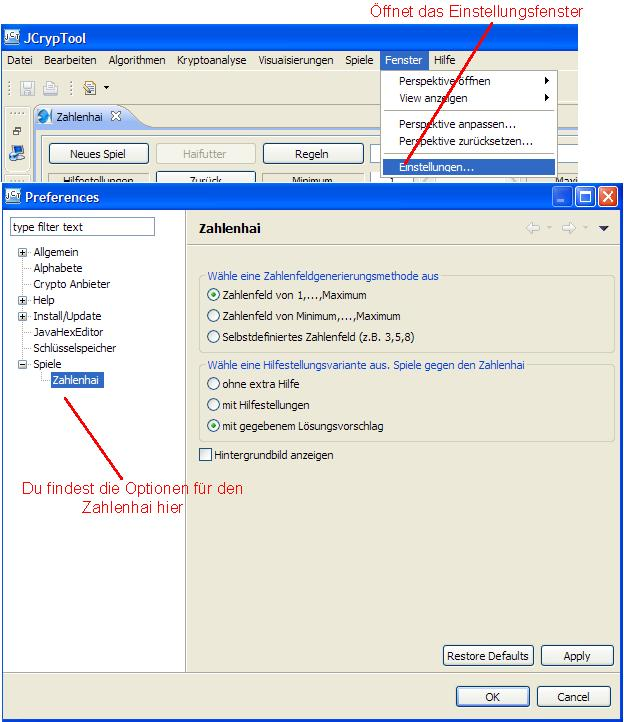
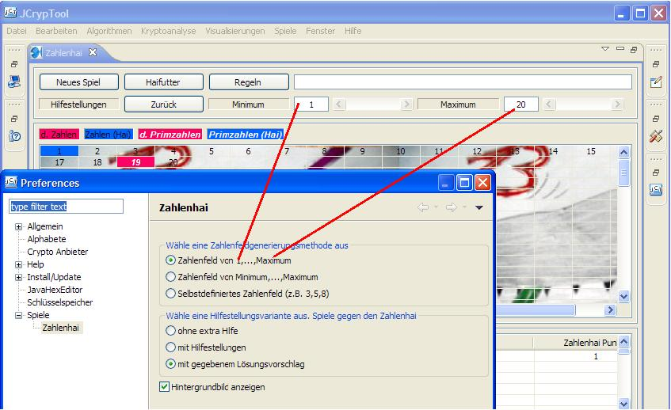
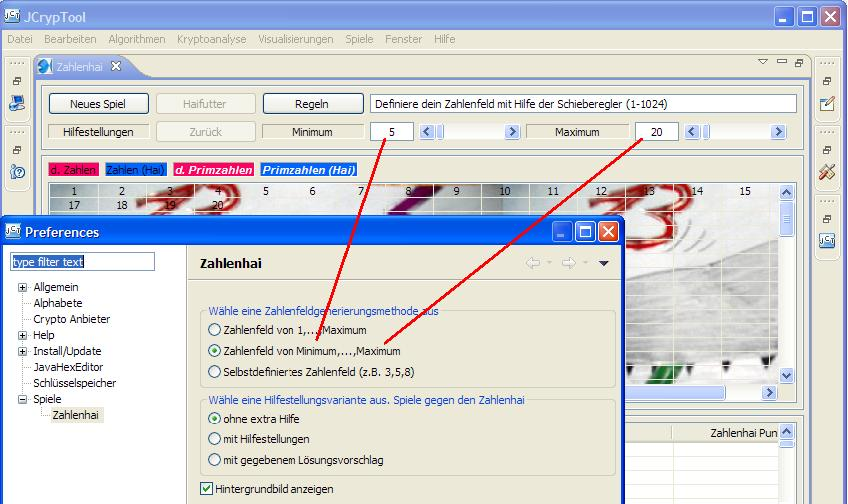
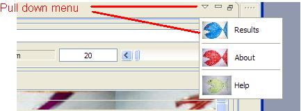
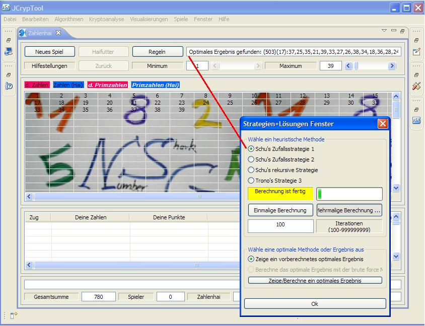
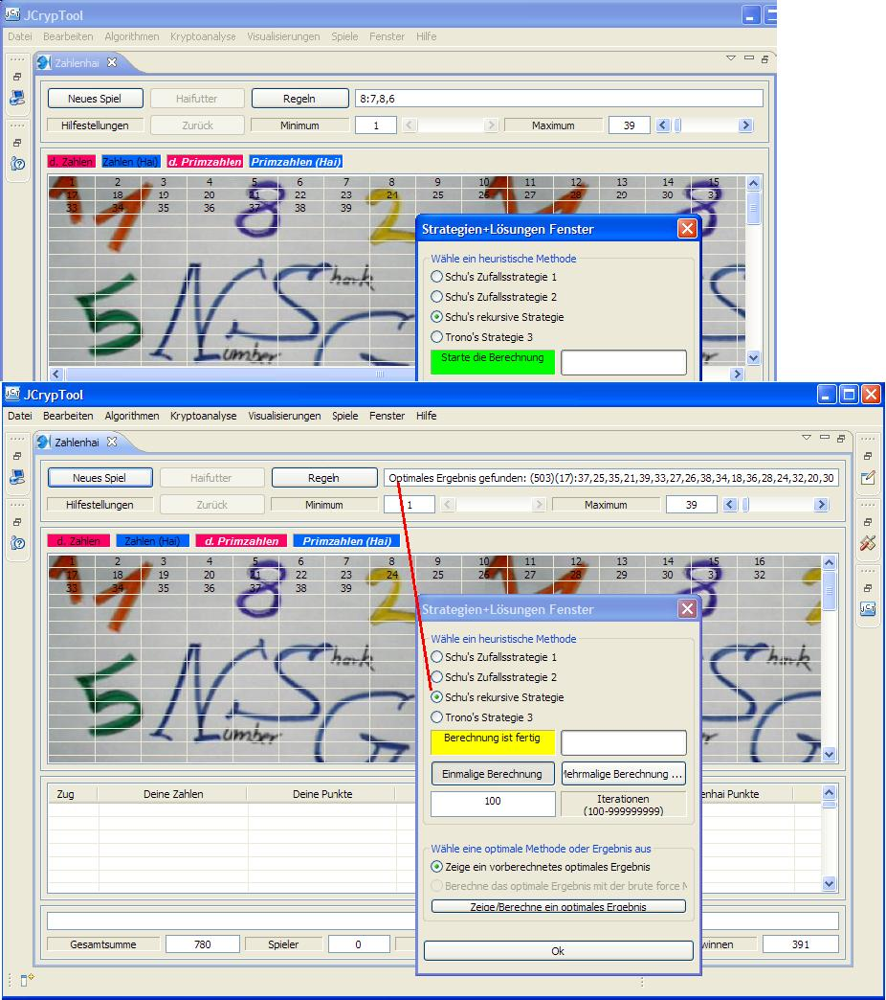
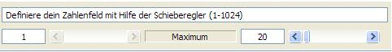
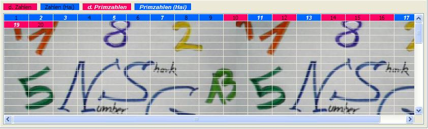
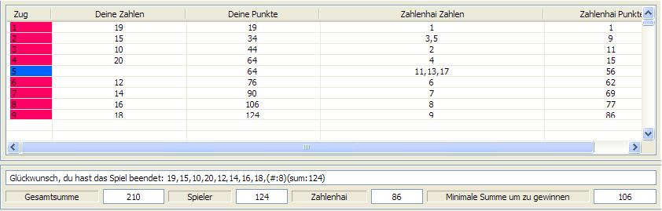

Anleitung
Das folgende Bild zeigt das Hauptfenster des Zahlenhaispiels. Es enthält den Zahlenfeld
Kontrollbereich, den Zahlenfeld Auswahlbereich sowie den Informationsbereich und das Informationsfenster.
Der Zahlenfeldkontrollbereich dient zur Kontrolle des Spiels. Der Zahlenfeld Auswahlbereich ist
deine Spielarena, wo du gegen den Zahlenhai spielst. Im Informationsbereich und im Informationsfenster
erhälst du zusätzliche Hinweise und es wird dein Spielverlauf aufgezeichnet.

1. Zahlenfeld Kontroll- und Auswahlbereich
Der Zahlenfeld Kontrollbereich dient zur Kontrolle des Spiels. Dafür stehen drei unterschiedliche
Steuereinheiten zur Verfügung: 1. Steuerknöpfe, 2. Schieberegler, 3. Text Eingabefeld.
Der Zahlenfeld Auswahlbereich ist die Spielarena. Im folgenden werden die einzelnen Bereiche noch genauer erklärt.
1.1 Knöpfe

- "Neues Spiel"
Wenn du ein neues Zahlenfeld ausgewählt hast, musst du den Knopf "Neues Spiel" drücken, um das Spiel zu beginnen.
Das Auswählen eines Zahlenfeldes kann entweder durch Ändern eines Parameters einer bereits ausgewählten Zahlenfeldvariante
oder durch die Auswahl einer neuen Zahlenfeldvariante geschehen.
- "Hilfestellungen"
Wenn du auf diesen Knopf drückst, bekommst du einen Hinweis für deinen nächsten Zug. Weiterhin gibt
dir das Programm noch einen Hinweis, ob du noch gewinnen kannst oder ob du verlieren wirst. Die Hilfestellungsfunktion
ist nur für die Hilfestellungsvarianten 2 und 3 aktiviert. Um diese zu aktivieren, must du im Einstellungsfenster
den entsprechenden Parameter setzen. Die Hinweisfunktion zeigt dir nicht die Züge, um ein optimales Ergebnis
zu erreichen, sondern nur Züge, um auf jeden Fall gegen den Zahlenhai zu gewinnen. Aber aufgepasst: Abhängig von
der Größe des gewählten Zahlenfeldes kann es sehr lange dauern bis der Hinweis fertig berechnet ist.
Die folgende Figur zeigt zwei Situationen. Auf der linken Seite wird die Situation gezeigt, bevor man auf den
Hilfestellungsknopf gedrückt hat, und auf der rechten Seite sieht man das Ergebnis, nachdem man auf den Knopf gedrückt hat.

- "Haifutter"
Zahlen, die keine freien, echten Teiler mehr haben und auch keine Teiler für andere freie Zahlen mehr sind, können
zu deinem Punktestand nichts mehr beitragen. Gibt es solche Zahlen, wird der Knopf "Haifutter" aktiviert. Die folgende
Figur zeigt ein Beispiel für eine solche Situation. Alle Zahlen sind im Hinweisfeld des Knopfes "Haifutter" gelistet.
Durch Drücken des Knopfes, kannst du alle gelisteten Zahlen sofort aus dem Spiel nehmen (Futter für den Hai- Haifutter).
Es wird empfohlen, diesen Knopf immer zu drücken, sobald er aktiviert wurde: Man bekommt einfach einen besseren Überblick
über die wirklich interessanten Zahlen. Aber aufgepasst, diese Aktion kann noch nicht rückgängig gemacht werden

- "Zurück"
Dieser Knopf erlaubt dir deine letzte Zahlenauswahl im Zahlenfeld Auswahlbereich rückgängig zu machen. Aber
aufgepasst, es kann bisher nur die letzte Zahlenauswahl rückgängig gemacht werden.
- "Regeln"
Durch diesen Knopf wird ein neues Fenster geöffnet, welches dir die Regeln
des Spiels zeigt.
- "Hilfe" (Menu - Hilfe)
Damit öffnest du die Kontexthilfe des Zahlenhais. Von hier aus kann du die komplette Hilfe des
Zahlenhai öffnen.

1.1.1 Einstellungen für den Zahlenhai
Auf der Einstellungsseite gibt es drei Auswahlmöglichkeiten. Als erstes kann man eine von drei verschiedenen
Zahlenfeldgenerierungsmethoden wählen. Weiterhin gibt es die Möglichkeit eine von drei Hilfestellungsvarianten
auszuwählen. Zu guter letzt kann man sich dafür entscheiden, ob man ein Hintergrundbild für den Zahlenfeld
Auswahlbereich möchte oder nicht. Aktiviert man die Funktion, so ändert sich das Hintergrundbild zufällig mit jedem
Drücken des Knopfes "Neues Spiel".

Zuerst kannst du eine von drei Zahlenfeldgenerierungsmethoden auswählen.
Zahlenfeld von 1 to Maximum (Maximum ist die Größe des Zahlenfeldes)
Die maximale Größe des Zahlenfeldes kannst du mit dem Schieberegler, wie in der nächsten Figur gezeigt,
ändern. Das Zahlenfeld für dieses Beispiel ist nun die Menge {1,...,20}. Für diese Generierungsmethode hat der
Schieberegler für die minimale Größe des Zahlenfeldes und das Texteingabefeld keine Bedeutung. Der Wert
des Schiebereglers für die minimale Größe ist immer auf '1' gesetzt. Alle Hilfestellungsvarianten sind möglich
für diese Methode.

Zahlenfeld von Minimum bis Maximum (Maximum - Minimum + 1 ist die Größe des Zahlenfeldes)
Die Größe des Zahlenfeldes kann mit den Schiebereglern, wie in der nächsten Figur gezeigt, ausgewählt werden.
Das Zahlenfeld für dieses Beispiel ist nun die Menge {5,...,20}. Beide Schieberegler sind aktiviert. Es ist allerdings
nicht möglich den Schieberegler für den minimalen Wert größer oder gleich dem Wert des Schiebreglers für den maximalen
Wert zu setzen. Für diese Zahlenfeldgenerierungsmethode ist nur die Hilfestellungsvariante ohne extra Hilfe möglich
(die anderen Varianten werden in einer zukünftigen Version des Programms implementiert). Das Texteingabefeld hat für diese Methode
keine Bedeutung.

Das Zahlenfeld ist definiert durch folgende Zahlen: n1, n2, ..., nk (k, ni ist Element aus IN, 1<=i<=k, k ist die Größe des Zahlenfeldes)
Gib deine Zahlen in dem Texteingabefeld, wie in der folgenden Figur gezeigt, ein. Die Zahlen müssen alle
per "," separiert sein, z.B. 1,1,2,3,8,13,21. Alle anderen Formate sind noch nicht erlaubt und werden dementsprechend
nicht vom Programm angenommen. Wenn der Knopf "Neues Spiel" aktiviert wurde, hat das Programm deine Werte akzeptiert,
ansonsten bitte überprüfe deine Eingabewerte (z.B. hast du den Knopf "Return" gedrückt, sind Lücken vorhanden, etc.).
Wie man im Beispiel sehen kann, sind auch Vielfache von Zahlen erlaubt. Für diese Zahlenfeldgenerierungsmethode ist nur die Hilfestellungsvariante ohne extra Hilfe möglich
(die anderen Varianten werden in einer zukünftigen Version des Programms implementiert). Die Schieberegler sind für diese
Methode nicht aktiviert.

Dann kannst du dich für eine von drei Hilfestellungsvarianten entscheiden.
Hilfestellungsvariante 1: Du spielst ohne extra Hilfe gegen den Zahlenhai.
Hilfestellungsvariante 2: Du spielst mit Hilfestellungen gegen den Zahlenhai.
Hilfestellungsvariante 3: Du spielst mit Hilfestellungen gegen den Zahlenhai und kannst dir noch
einen Lösungsvorschlag anschauen (Menu - Strategien+Lösungen)
Zusätzlich kannst du dir noch eine Lösung mit einer heuristischen Methode oder einem "brute force" Algorithmus
berechnen lassen oder eine schon vorberechnete optimale Lösung anschauen. Das ermöglicht dir dieses Ergebnis
nachzuspielen oder das Ergebnis im Detail zu studieren. Alle Aktionen können im Strategien+Lösungen Fenster
ausgeführt werden (die Details werden im nächsten Abschnitt erklärt).
Zu guter letzt kannst du noch das Hintergrundbild des Zahlenfeld Auswahlbereiches ändern. Aktivierst du den Auswahlknopf,
ändert sich der Hintergrund zufällig, und zwar jedesmal, wenn du den Knopf "Neues Spiel" drückst. Alle Bilder sind von meinen Kindern
oder von mir selbst gemalt worden.
1.1.2 Strategien+Lösungen Fenster

Das Strategien+Lösungen Fenster bietet dir zwei Wahlmöglichkeiten. Zuerst kannst du eine aus vier heuristischen
Methoden auswählen, um mögliche Lösungen zu berechnen. Diese können unter Umständen auch optimal sein. Weiterhin
kannst du dir schon vorberechnete optimale Lösungen anschauen oder neu mit einem "Brute Force" Algorithmus berechnen.
Die "Brute Force" Methode ist in dieser Version noch nicht implementiert.

Die folgende Figur erklärt, wie das Strategien+Lösungen Fenster geöffnet wird.

Zuerst kannst du eine von vier heuristischen Methoden auswählen um eine Lösung zu berechnen.
- Schu's Zufallsstrategie 1
- Schu's Zufallsstratgie 2
- Schu's rekursive Strategie
- Trono's Strategie 3
Weitergehende Informationen findest du im Kapitel
Discussion of good and optimal strategies
(zur Zeit nur in Englisch verfügbar).
Du kannst alle heuristischen Methoden starten, indem du entweder den Knopf "Einmalige Berechnung" oder
den Knopf "Mehrmalige Berechnungen...." drückst. Einige Methoden benötigen Parameter, die im folgenden näher erläutert werden.
Aber aufgepasst: Abhängig von
der Größe des gewählten Zahlenfeldes kann es sehr lange dauern bis das Ergebnis fertig berechnet ist.
Die folgende Figur zeigt den Zahlenfeld Auswahlbereich und das Strategien+Lösungen Fenster nach Beendigung einer Aktion
mit dem Knopf "Mehrmalige Berechnungen...." und "Schu's Zufallsstrategie 1". Die gelbe Farbe zeigt an, dass die Berechnung
beendet wurde. Die Berechnung wird sofort beendet, wenn für ein gegebenes Zahlenfeld ein schon bekanntes
optimales Ergebnis erreicht wurde. Im Falle des Beispiels ist N=39 und das optimale Ergebnis dafür ist bekannt.
Du kannst dir das Ergebnis der Berechnung im Ausgabetextfeld anschauen. Es wird die Zugfolge, die Anzahl der Züge und
der erreichte Punktestand angezeigt. Das Ergebnis kann für eine weitere Verwendung kopiert werden. Für alle Methoden definiert
der Schieberegler für den Maximalwert die Größe des Zahlenfeldes. Der Fortschrittsbalken zeigt dir den aktuellen Verarbeitungsstand
der Berechnung an. Die rote Farbe bedeutet, dass die Berechnung noch andauert. Ist das optimale Ergebnis nicht bekannt oder
nicht berechenbar bei der gewählten Methode, endet die Berechnung automatisch nach der definierten Anzahl von Iterationen.
Die Anzahl der Iterationen kann im dafür vorgesehenen Feld eingetragen werden. Die minimale Anzahl von Iterationen ist 100.
Grüne Farbe bedeutet, dass die Berechnung gestartet werden kann.

- Knopf "Einmalige Berechnung"
Startet die Berechnung einer heuristischen Methode. Die Methode wird nur einmal ausgeführt.
Die Zufallsparameter für "Schu's Strategie 1&2" werden intern berechnet und sie ändern sich bei jeder
neuen Ausführung. Die beiden anderen Methoden sind deterministisch.
- Knopf "Mehrmalige Berechnungen...."
Startet die Berechnung einer heuristischen Methode. Die Methode wird mehrmals ausgeführt. Die Anzahl der Wiederholungen
wird durch die Zahl im Iterationenfeld definiert. Die Zufallsparameter für "Schu's Strategie 1&2" werden intern berechnet
und sie ändern sich bei jeder Iteration.
Für "Schu's rekursive Strategie" und "Trono's Strategie 3" ist das Verhalten identisch zu
dem Knopf "Einmalige Berechnung".
- Iterationen Eingabfeld
Hier kannst du die Anzahl der Iterationen für "Schu's Zufallsstrategien 1&2" eingeben.
Aber aufgepasst: Abhängig von
der Größe des gewählten Zahlenfeldes kann es sehr lange dauern bis das Ergebnis fertig berechnet ist, wenn du die Anzahl
der Iterationen zu groß wählst.
"Schu's rekursive Strategie" erwartet als Initialwert die Größe eines Zahlenfeldes und eine möglichst optimale
Zugfolge. Die Anzahl der Iterationen wird hier durch den Initialwert und den Wert des Schiebereglers für den Maximalwert
definiert.
- Fortschrittsbalken
Der Fortschrittsbalken zeigt dir den aktuellen Stand der Berechnung an.
- Initialisierungs Eingabefeld
"Schu's rekursive Strategie" erwartet als Eingabe die Größe eines Zahlenfeldes und eine dazu korrespondierende,
möglichst optimale Zugfolge. Beide Informationen müssen im Initalisierungs Eingabefeld (ist identisch zum Ergebnis
Ausgabefeld) eingegben werden. Die folgenden Figuren zeigen die Situation vor dem Start und nach der Beendigung von
"Schu's rekursiver Strategie". Der Initialwert is automatisch auf (8):7,8,6 gesetzt. Das bedeutet, die Größe des
Zahlenfeldes ist 8 und die Zugfolge ist 7,8,6. Die Größe des Zahlenfeldes, für die eine Lösung berechnet werden soll,
ist N=39. Startet man nun die Methode, wird sie solange wiederholt, bis die finale Größe des Zahlenfeldes erreicht ist.
Aber aufgepasst: Wenn du eine falsche Größe und/oder falsche Zugfolge als Startwert definierst, dann wird das Ergebnis
falsch sein. Außerdem muß die Größe als auch die Zugfolge kleiner sein als die der zu berechnenden Zugfolge. Ansonsten
ändert das Programm deine falschen Werte.
- Ergebnis Ausgabefeld
Hier findest du das Ergebnis der heuristischen Methode. Das Ergebnis beinhalted deinen Punktestand, die Anzahl
der Züge als auch die eigentliche Zugfolge. Das Feld kann zur weiteren Verwendung kopiert werden.

Weiterhin kannst du dir schon vorberechnete, optimale Ergebnisse (allerdings nur bis zu 158, gemäß
Dan Hoey [2]) anschauen. Oder du berechnest sie selber unter
Verwendung einer "Brute Force" Methode (noch nicht in dieser Version implementiert). Die folgende Figur zeigt
die Situation nach dem Drücken des Knopfes "Zeige/Berechne ein optimales Ergebnis". Basierend auf ihrer Zuordnung
sind die Zahlen eingefärbt. Das Textfeld zeigt die Zugfolge und den optimalen Punktestand in Klammern. Das Ergebnis
kann zum Beispiel als Eingangsfolge für "Schu's rekursive Strategie" kopiert werden.

1.2 Schieberegler und Texteingabefeld
Die Schieberegler für den minimalen und maximalen Wert werden benötigt, um das Zahlenfeld für
die Generierungsvariante 1 und 2 zu definieren. Im Falle der Variante 3 wird das Eingabetextfeld benötigt (Vergleiche auch
1.1.1.)

1.3 Zahlenfeld Auswahlbereich
Der Zahlenfeld Auswahlbereich ist die eigentliche Spielarena. Du kannst auf jede beliebige Zahl im Auswahlbereich
klicken. Aber nur wenn die aktuelle Position des Mauszeigers mit einer grauen Hintergrundfarbe hervorgehoben wird,
kann die Zahl auch ankgeklickt werden. Nachdem du eine Zahl angeklickt hast, wird sie gefärbt.
Gefärbte Farben können nicht mehr angeklickt werden. Die Farben haben verschiedene Bedeutungen:
Magenta mit weißer Zahl: Primzahl, die zu deinem Punktestand beiträgt
Magenta mit schwarzer Zahl: Zusammengesetzte Zahl, die zu deinem Punktestand beiträgt
Blau mit weißer Zahl: Primzahl, die zum Punktestand des Zahlenhais beiträgt
Blau mit schwarzer Zahl: Zusammengesetzte Zahl, die zum Punktestand des Zahlenhais beiträgt
Die Größe des Zahlenfeldes wird beim Start des Programms generiert. Kannst du nicht alle Zahlen im Zahlenfeld
Auswahlbereich sehen, benutze bitte die Schieberegler des Fensters, um dich im Zahlenfeld hin- und herzubewegen.
Das Zahlenfeld wird nach dem Start automatisch auf {1,...,20} gesetzt. Du kannst sofort mit Spiel beginnen.
Jederzeit kannst du auch ein neues Spiel durch Drücken des Knopfes "Neues Spiel" starten. In diesem Fall wird der
Zahlenfeld Auswahlbereich neu initialisert.

2. Informationsfenster- und bereich
Das Informationsfenster und der Informationsbereich zeichnen bzw. zeigen verschiedene Details in Abhängigkeit
von deiner Zugfolge.

2.1 Das Informationsfenster
- Text Ausgabe
Die Text Ausgabe zeichnet deine Zugfolge auf. Der Bereich kann für eine weitere Verarbeitung kopiert
werden. Die zwei Zahlen in Klammern geben die Anzahl der Zahlen deiner Zugfolge an und deinen Punktestand.
- Gesamtsumme
Die Summe aller Zahlen ergibt die Gesamtsumme. Diese wird später in deinen Punktestand und in die des
Zahlenhais zerlegt. Am Ende des Spiels, ergibt dein Punktestand und der Punktestand des Hais zusammen wieder die
Gesamtsumme.
- Spieler
Das ist dein Punktestand.
- Hai
Das ist der Punktestand des Hais.
- Minimale Summe um zu gewinnen
Um zu gewinnen, muß deine Summe größer sein als diese Summe.
Sie ist identisch zu der halben Gesamtsumme plus 1.
2.2 Der Informationsbereich
Die Tabelle zeichnet für jeden Zug deine ausgewählte Zahl und deinen aktuellen Punktestand auf.
Weiterhin auch die Zahlen des Hais und seinen Punktestand. Die Tabelle kann z.B. zur Analyse der Zugfolge
im Detail benützt werden.